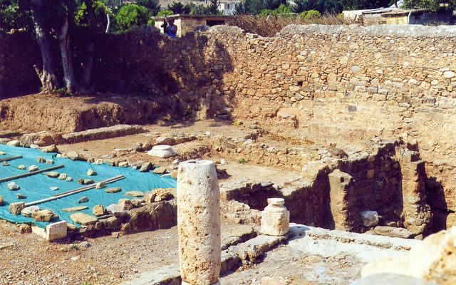
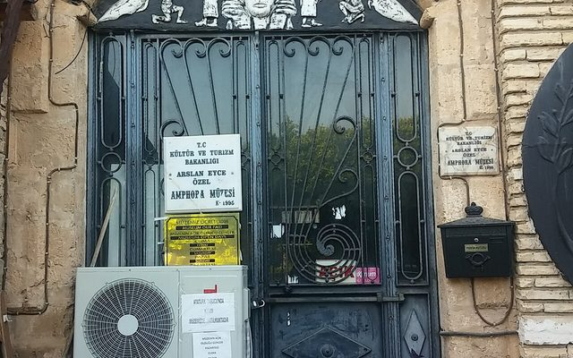
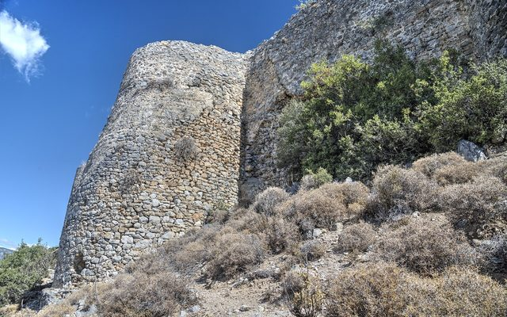

الرئيسية › أماكن تستحق الزيارة حسب الولاية › مرسين
يضم دليل Kültür Varlıkları 44 مكانًا في مرسين: 23 موقع أثري, 10 متحف, 7 قلعة ومبنى تاريخي, 2 مبنى ديني, 2 موقع طبيعي. ستجد أدناه أبرز الأماكن وخريطة والقائمة الكاملة.
⭐ أبرز الأماكن

1 · مرسين · موقع أثريآدم قايالار
مجموعة نقوش بشرية من العصر الروماني منحوتة في جروف وادي شيطان دره بين سيليفكه وأردملي.

2 · مرسين · موقع أثريآق قلعة
مجمع روماني وبيزنطي على شاطئ كومكويو في أرديملي، يتألف من فيلا من طابقين وحمام وصهاريج ومخازن، ويسهل الوصول إليه من الطريق الساحلي.

3 · مرسين · موقع أثريموقع أنيموريوم الأثري
تقع أنيموريوم، عند رأس أنامور، أقصى نقطة جنوبية في الأناضول، بين البحر والجبال.
🗺 على الخريطة
📍 جميع الأماكن (44)
موقع أثري (23)
آدم قايالارموقع أثريآق قلعةموقع أثريموقع أنيموريوم الأثريموقع أثري إلايوسا سيباستيموقع أثري
إلايوسا سيباستيموقع أثري غوك قلعةموقع أثري
غوك قلعةموقع أثري موقع قانلي ديوانه الأثريموقع أثري
موقع قانلي ديوانه الأثريموقع أثري قانلي ديوانه (كانيتيليس)موقع أثري
قانلي ديوانه (كانيتيليس)موقع أثري قره قباقليموقع أثري
قره قباقليموقع أثري
مدينة كيليندريس الأثريةموقع أثري مزغيت قلعةموقع أثري
مزغيت قلعةموقع أثري مدينة أولبا الأثريةموقع أثري
مدينة أولبا الأثريةموقع أثري موقع آيا تكلا الأثري في سيليفكهموقع أثري
موقع آيا تكلا الأثري في سيليفكهموقع أثري سولي بومبيوبوليسموقع أثري
سولي بومبيوبوليسموقع أثري تابوريليموقع أثري
تابوريليموقع أثري الطريق الروماني في طرسوسموقع أثري
الطريق الروماني في طرسوسموقع أثري غوزلوكوله في طرسوسموقع أثري
غوزلوكوله في طرسوسموقع أثري بوابة كليوباترا والطريق القديم في طرسوسموقع أثري
بوابة كليوباترا والطريق القديم في طرسوسموقع أثري موقع أوزونجه بورج الأثريموقع أثري
موقع أوزونجه بورج الأثريموقع أثري يانق خانموقع أثري
يانق خانموقع أثري تل يوموك تبهموقع أثري
تل يوموك تبهموقع أثري تشاتي أورنموقع أثري
تشاتي أورنموقع أثري أوكوزلوموقع أثري
أوكوزلوموقع أثري أوتش أياقليموقع أثري
أوتش أياقليموقع أثريمتحف (10)
 متحف بيت أتاتورك في مرسينمتحف
متحف بيت أتاتورك في مرسينمتحف متحف مرسينمتحف
متحف مرسينمتحف متحف بيت أتاتورك والإثنوغرافيا في سيليفكهمتحف
متحف بيت أتاتورك والإثنوغرافيا في سيليفكهمتحف متحف سيليفكهمتحف
متحف سيليفكهمتحف متحف نارلي كويو للفسيفساء في سيليفكهمتحف
متحف نارلي كويو للفسيفساء في سيليفكهمتحف متحف القديس بولس التذكاري في طرسوسمتحف
متحف القديس بولس التذكاري في طرسوسمتحف
متحف أرسلان إيجه للأمفوراتمتحف بيت أتاتورك في طاشوجومتحفمتحف أنامورمتحفمتحف طرسوسمتحف
بيت أتاتورك في طاشوجومتحفمتحف أنامورمتحفمتحف طرسوسمتحفقلعة ومبنى تاريخي (7)
 قلعة غوزنهقلعة ومبنى تاريخي
قلعة غوزنهقلعة ومبنى تاريخي كوريكوس وقيز قلعةقلعة ومبنى تاريخي
كوريكوس وقيز قلعةقلعة ومبنى تاريخي قلعة مامورةقلعة ومبنى تاريخي
قلعة مامورةقلعة ومبنى تاريخي قلعة الفتاة في مرسين (قيز قلعة)قلعة ومبنى تاريخي
قلعة الفتاة في مرسين (قيز قلعة)قلعة ومبنى تاريخي قلعة نمرونقلعة ومبنى تاريخي
قلعة نمرونقلعة ومبنى تاريخي قلعة سيليفكهقلعة ومبنى تاريخي
قلعة سيليفكهقلعة ومبنى تاريخي
قلعة صوفتاقلعة ومبنى تاريخي